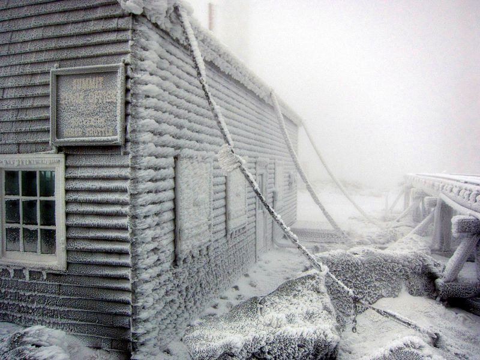
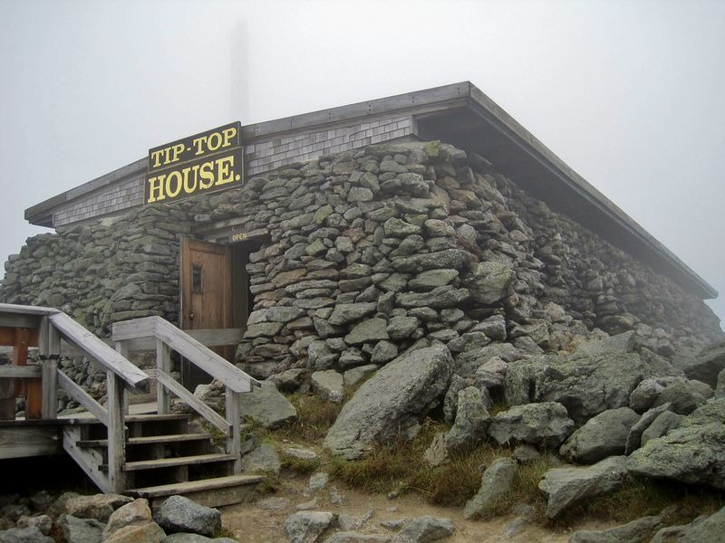

Mount Washington, in New Hampshire, is the highest peak in Northeastern United States and the most prominent mountain east of the Mississippi River. Before the European settlers arrived, the natives called the mountain Agiocochook, or "Home of the Great Spirit". Today, it is better known as the "Home of the World's Worst Weather.”
Mount Washington is located in the temperate climate zone but has Arctic-like conditions. Extreme cold, year-round snowfall, dense fog, heavy icing, and exceptional winds are some of Mount Washington's prominent features. The peak isn’t terribly high either — just 6,288 feet — yet it endures some of the planet’s most extreme weather comparable to those experienced on top of Mount Everest or on the South Pole.
Chilling Temperatures

The lowest temperature ever recorded at Mount Washington's summit is −46.0 °C. Only the South Pole is colder. The highest wind speed recorded here was 231 miles per hour (372 km/h) which remained the fastest wind speed ever recorded anywhere on earth, for most of the 20th century, besting even the most fierce hurricanes. The peak is blasted by hurricane-force wind on an average of 110 days a year which further lowers the wind chill value. On January 16, 2004, the summit registered a temperature of −42.0 °C and sustained winds of 87.5 mph (140.8 km/h), resulting in a wind chill value of −74.77 °C.
Mount Washington’s extreme weather is due to its geographic location. The peak stands on the path of several storms, mainly those from the Atlantic to the south, the Gulf region and Pacific Northwest. The vertical rise of the Presidential Range, combined with its north-south orientation, makes it a significant barrier to westerly winds. In the winter months, due to the relative temperature differences between the Northeast and the Atlantic Ocean, a low-pressure system develops along the coastline which generates ferocious gusts of wind.
Mount Washington Observatory
For nearly sixty-two years, Mount Washington held the world record for the fastest wind gust ever recorded on the surface of the Earth. On April 12, 1934, researchers at the Mount Washington Observatory recorded wind speeds of 231 miles per hour. The record was toppled in 1996 when an unmanned instrument station in Barrow Island, Australia recorded a new record of 253 miles per hour during Typhoon Olivia. The primary building of Mount Washington Observatory built on the summit in 1932, as well as many structures of the observatory, are actually chained to the ground to prevent these structures from being blown away.

Mount Washington also receives very high levels of precipitation. Snowfall occurs almost throughout the year averaging 280 inches a year. In February 1969, a record 49.3 inches of snow fell during a single 24-hour period. These erratic weather condition prompted Charles Brooks, the man behind the creation of the Mount Washington Observatory, to call Mount Washington as "Home of the World's Worst Weather" — a slogan the observatory makes prominent use of.
The peak and the observatory are a popular tourist spot as well. The mountain is part of a popular hiking area, with the Appalachian Trail crossing the summit, that brings in many adventurists to the area. The high winds has also made the region a popular site for glider flying. For those who aren’t into hiking, there is a cog railway that provides tourists with a train journey to the summit of Mount Washington.

Ten-Day Weather Forecast
| DAY | DESCRIPTION | HIGH / LOW | PRECIP | WIND | HUMIDITY |
|---|---|---|---|---|---|
| TONIGHT
OCT 11 |
Light Rain/Wind Early | --/34° | 70% | WNW 39 mph | 93% |
| FRI
OCT 12 |
Partly Cloudy/Wind | 38°/18° | 20% | WNW 51 mph | 90% |
| SAT
OCT 13 |
Snow Showers/Wind | 23°/18° | 50% | W 42 mph | 92% |
| SUN
OCT 14 |
Partly Cloud/Wind | 31°/18° | 10% | W 44 mph | 69% |
| MON
OCT 15 |
Snow Showers/Wind | 34°/22° | 60% | W 25 mph | 90% |
| TUE
OCT 16 |
Partly Cloud/Wind | 26°/24° | 20% | W 31 mph | 73% |
| WED
OCT 17 |
Few Snow Showers/Wind | 27°/16° | 30% | W 29 mph | 85% |
| THU
OCT 18 |
Partly Cloud/Wind | 23°/18° | 10% | W 31 mph | 66% |
| FRI
OCT 19 |
AM Snow Showers/Wind | 25°/19° | 50% | W 29 mph | 71% |
| SAT
OCT 20 |
Partly Cloud/Wind | 29°/24° | 10% | W 29 mph | 83% |
| SUN
OCT 21 |
Partly Cloud/Wind | 29°/23° | 20% | W 28 mph | 79% |
| MON
OCT 22 |
AM Snow Showers/Wind | 31°/25° | 30% | W 29 mph | 79% |
| TUE
OCT 23 |
Partly Cloud/Wind | 31°/25° | 20% | W 28 mph | 84% |
| THU
OCT 24 |
Snow Showers/Wind | 30°/26° | 40% | W 27 mph | 92% |
| FRI
OCT 25 |
Snow Showers/Wind | 29°/24° | 60% | W 29 mph | 90% |